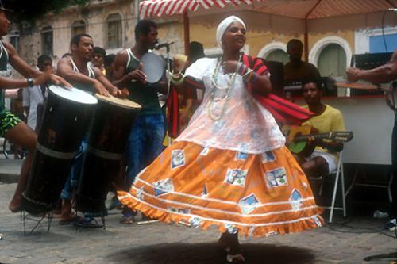

Samba de Roda Part 2
В общем, поскольку я преподаю самбу в нашем городе, конечно хочется не просто давать движения, но и давать часть истории, философии и делиться знаниями. Но как показывает практика информации о самбе ди рода в интернете на русском языке достаточно мало, я бы сказала, что ее практически нет:(. Я задалась целью найти хотя бы какую-то информацию по этой теме, и начала исследовать сайты на португальском языке. Практики изучения языка у меня не так много, перевод занял достаточно большое колличество времени, но я надеюсь вам оно будет интересно и полезно. Поскольку этой информации на русских источниках нет.
Сейчас мой перевод статьи находится на сайте нашей группы капоэйры ACMB Владивосток http://capoeirasol.ru
Оригинал статьи
С удовольствием делюсь ею с вами!

Самба ди Рода представляет собой традиционный музыкальный афро-бразильский стиль, связанный с танцем, который в свою очередь является частью капоэйры. Ритм самбы играют, используя пандейру, атабаке, беримбау, виола (гитара) и колокольчики агого, аккомпанируя пением и хлопками в ладоши.
Самба ди рода — это смесь музыки, танца, поэзии и веселья. В настоящее время во всем штате Баия практикуется самба, в основном в районе Реконкаво.
Ритма semba, сформированный из ритмов разных африканских племен, стал основой самбы. Самба очень похожа на ритм Jongo (примечание ред. http://www.youtube.com/watch?v=PMux9Nll9hg)
Самба делится на две различные группы: самба Шула и самба Корриду (o samba chula e samba corrido). Сначала участники не танцуют самбу, пока хор поет шулу. Шула является формой поэзии. Танец начинается после того, как прозвучит шула, и когда первый человек выйдет в роду под звуки инструментов и хлопки. Уже под песни корридус, все танцуют, в то время как два солиста и хор чередуют друг друга.
Самба ди рода связана с культурой божеств — Оришей и кабокло (аборигены Бразилии), с капоэйрой и едой с оливковым маслом (*прим ред. — оливковое масло используется издревле в большинстве блюд бразильской кухни). Культура Португалии так же выражает себя через звуки виолы, пандейру и языка, используемого в песнях.
Институт национального художественного и исторического наследия ЮНЕСКО (IPHAN Instituto do Patrimônio Histórico e Artístico Nacional) отнес самбу к нематериальному наследию. Ритм и танец был описан в архиве (в котором записаны акты, принятые в ЮНЕСКО), выпущенном 4 октября 2004 года, и, после изучения истории, самба ди рода, наконец, 25 ноября 2005 года, была отнесена к нематериальному наследию. Этот статус дает много преимуществ популярной культуре, байанской культуре Реконкаво, так же дает начало самбе ди рода.
В Баие существуют традиционные группы самба ди рода, такие, как:
Sambadores de Mutá – Jaguaripe
Эта группа самба-танцоров происходит из общества Muta, которое находится в городе Жагуарипе, в месте где сохранилась самобытность Самбы ди Рода. Участники группы используют атабаке, пандейро, тарелки, ножи и кампаньяс (campanhas) — это небольшие барабаны, сделанные из глины или бочки из дерева с мембраной из шкуры животных. Все участвующие хлопают в ладоши в унисон и Корриду поет один человек.
Nicinha Raízes – Santo Amaro
Нора Попо, известный водитель троллейбусов в этом районе сохранил и увековечил макулеле, Дона Нисинья ввела самбу ди рода в этой группе в Санто Амаро. Эта группа самбы состоит более чем из 30 человек, которые играют на пандейру, реку-реку, агого, тамбурине, маракасах. Участники этой группы охраняют свой уникальный стиль самбы с медленными и грациозными движениями, и даже если темп начинает ускоряться, движения не теряют своей чувственности и изящности, что позволяет каждой женщине особенно выражать себя.
Samba de Roda de São Braz – Santo Amaro
Шула в исполнении двух братьев Сантурино является базой самбы ди рода этой группы. Традиция Шулы группы Самба ди рода Сао Браз в обществе рыбаков и ловцов моллюсков в Санто-Амаро передается из поколения в поколение со времен рабства. Группа официально появилась в 1996 году, и их называют крикунами Шулы, потому что вокальной техникой обладали только пожилые члены общины.
Samba de Raparigas – Saúbara
Эту группу основала Дона Ана Розарио, девушки этой группы дают мужчинам право играть на пандейру, барабанах и виолах, и женщины, танцуют самбу в цветной одежде и длинных покрывалах, играют на на тарелочках и деревянных досках. Музыка основана на традиционных песнях Шулас и Коридус, происходит это со времен, когда женщины собирались вместе, одетые в домашние одежды и использовали стук деревянных ложек по тарелкам, чтобы отвлечь внимание надсмотрщиков и поспособствовать побегу рабов.
Samba Raízes de Angola – São Francisco do Conde
Несмотря на то, что эта группа представляет древнюю традицию, она родилась не так давно на территории Анголы, названной Angurucema Dya Nzambi, расположенной в Сан-Франциско ди Конде. Эта группа состоит из мужчин в костюмах, котрые играют на кавакиньу (разновидность гитары), пандейру, маракасах и барабанах, а так же женщин, которые поют и танцуют самбу ди рода. Группа радушно принимает к себе мужчин в роду, что не всегда допускается в других группах самбы.
Samba de Capela – Conceição de Almeida
Группа Samba de Capela представляет хореографические секвенции, которые сопровождаются аккомпанементом из традиционных народных песен и танца. Ее традиции берут начало в религии, которой поклоняются черные жители города. В настоящее время группа организована как ассоциация по развитию и социально-культурной работе с молодежью и детьми по месту жительства, которые имеют возможность обучаться традиционной музыке, песням и танцам.
___________________________________
Перевод: Дарья Coral Савина
В случае использования на других сайтах, просьба ссылаться на источник оригинала статьи и перевод.